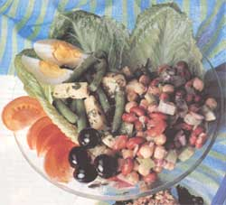
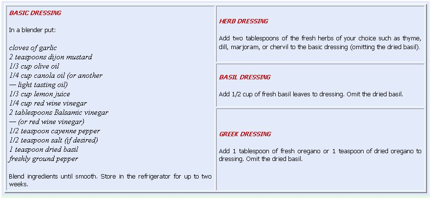
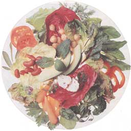

Natural Health Not Just A Side Dish
August/September 1992
by Anne Vassal
Add a little variety and spice to your summer salads.
Most of us eagerly welcome the long-awaited salad season, when a fresh, crisp salad is the most satisfying summer day meal. Now you don't have to be a salad lover to appreciate the variety of colors, textures, and flavors of a summer salad. It can be something as simple as homegrown, sliced tomatoes on tender bibb lettuce with a few chopped chives. A light vinaigrette drizzled sparingly over the top is a nice touch but not a necessity considering how many flavorful lettuces are available. A summer salad can even become the main course, unless you have a family like mine which asks, "Where's the beef?" So I throw some chicken or fish on the grill and serve that too.
If you've been trying to lose a few pounds, this is the season. Fruits and vegetables have a high-nutrient density, which means that for the number of calories they supply, most contain a disproportionately large amount of essential vitamins. An average head of romaine or leaf lettuce contains only 15 calories while high in vitamin A, calcium, and potassium. Because fruits and vegetables are filled with water and fiber, they leave you feeling nice and full.
Lighten up your Dressing
So why aren't all the salad eaters as skinny as bean poles? Too often, the most nutritious and low-Fully prepared, we cast our lines into the water and sat calmly, like Jonah, and waited for our whale.calorie salad is ruined by a fatty dressing. Just two tablespoons of bottled dressing or mayonnaise can increase a salad's calorie value by 150 calories or more. Sure there are lowfat bottled dressings now, but they are often high in sodium and contain additives. These salad dressings were created for the tasteless and nutrition-less iceberg lettuce that sit around in the grocery store for weeks. Homemade dressings, on the other hand, are a simple and economical alternative to expensive bottled dressings. The "Basic Salad Dressing" (see recipe below) does contain some oil, but I've chosen olive oil and canola oil because they're monounsaturated oils which are great for cholesterol watchers. (Canola oil is also the lowest in saturated fat.) If you are watching your fat intake, add more lemon juice and less oil; use dressing sparingly.
Included here are some healthy versions of old favorites. Instead of using mayonnaise for coleslaw and potato salad, there's an alternative dressing. If you prefer to use mayonnaise, buy the "light" variety at a health food store, and use half mayonnaise and half low-fat yogurt in your recipe. All the recipes are kept simple because I'm sure you'd rather be swimming, golfing, boating than cooking.
Salad Assembly
Choose a variety of light and dark green lettuces (the darker contain the most nutrients). Some possibilities include: romaine, leaf, bibb, boston, buttercrunch, radicchio, endive, spinach, and kale. Our favorite is arugula, which is sturdy and grows until well into October.
Wash the lettuce in a colander and shake out the excess water. Wrap in a dishtowel (not terrycloth) and refrigerate for a few hours. If refrigerating overnight, put the whole dishtowel bundle in a plastic bag.
Dressing Your Salad
Summer salad dressing needs to be light and tasty without overpowering the delicate and flavorful garden lettuces. Use a quality red wine vinegar such as "Great Impressions" or "Spice Island" which can be found at most supermarkets. I use a light-tasting olive oil, preferably an Italian oil. For flavor, add canola oil which is tasteless. For a sliced, tomato salad, you may want to use only olive oil with two tablespoons or so of extra-virgin olive oil for a stronger olive taste.
Greek Village Salad
This type of salad is served in one of our favorite restaurants in Chicago's Greektown. Calamata (Greek) olives and feta cheese can usually be found at the deli counter in large supermarkets. If you have a choice, imported Greek feta cheese is better tasting than domestic. It's less salty and made with goat's milk. Yugoslavian feta is very goaty tasting and French feta (if you can find it) is the best I've ever tasted. Store the feta in a covered plastic container submerged in water. My husband's Greek father always stored feta in milk, which drew out some of the salt. If you do try the milk method, empty the milk out after two or three days.
4 or 5 tomatoes, cut into wedges
1 cucumber, cut in half or lengthwise
- and thinly sliced
1 green pepper, thinly sliced
1 small red onion, cut in half
- and thinly sliced
10 to 15 Calamata (Greek) or canned,
- black olives (use whole or pit
- and cut into halves.
1/3 to 1/2 lb. Feta cheese,
- cut into small cubes
freshly ground pepper to taste
2 tablespoons chopped parsley
1/2 to 1 teaspoon dried oregano
- or any other crisp variety to taste
Put the washed and torn lettuce on a platter or in a bowl. Arrange the rest of the ingredients on top. Sprinkle with oregano and parsley. Drizzle "Greek Dressing" on top, and then toss lightly just before serving.
Cucumber Salad
Cucumber salad can be prepared ahead of time if you mix in the dressing just before serving so it doesn't get too watery.
4 to 5 cucumbers, thinly sliced,
- peeled if you prefer
1 small red onion, halved
- and thinly sliced
4 green onions, sliced into thin circles
- 1/2 cup chopped chives
DRESSING:
1 cup yogurt, low-fat or nonfat
salt, ground pepper, and
- cayenne pepper to taste
1/2 teaspoon ground cumins
Combine salad ingredients in a large bowl. Then prepare dressing and mix so that vegetalbes are well-coated.
Green Bean-Garbanzo Salad
4 cups green beans
1 can garbanzo beans (chick peas)
- rinsed in cold water
1 red onion, cut in half
- and thinly sliced
3 tablespoons fresh dill chopped, or 1 - tablespoon dried dill
1/2 cup chopped parsley
1/2 teaspoon cayenne pepper
salt and/or freshly ground pepper
2 tablespoons red wine vinegar
3 tablespoons olive oil
1 teaspoon dijon mustard
2 large cloves garlic, minced
Steam the green beans until they're almost done but still firm. They'll continue to cook as they sit. Put the beans in the freezer for five minutes to chill. Then mix the garbanzos, onion, parsley, and dill. Separately mix the dressing in the blender or with a whisk and stir into the salad. Serve immediately or chill until mealtime.
Mozzarella-Tomato Salad
I use homemade mozzarella cheese that I buy at an Italian deli for this salad. It comes shaped into small balls which are stored in water. If this cheese is unavailable, use a part-skim mozzarella or provolone cheese.
3 to 4 ripe homegrown tomatoes,
- sliced
2 balls of mozzarella sliced in 1/2"
- circles or regular mozzarella,
- cut into strips
chopped chives or green onion
6 to 8 fresh basil leaves, torn into
- pieces garden lettuce leaves (such as bibb)
Basil dressing
Arrange the lettuce in a platter or individual plates. Place the cheese and tomatoes on the lettuce. Top with chives and basil; drizzle with dressing.

|
 |
 |
 |